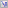
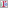
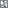

labscript suite components¶
The labscript suite is modular by design, and is comprised of:
|  | labscript — Expressive composition of hardware-timed experiments |
labscript-devices — Plugin architecture for controlling experiment hardware |
|
labscript-utils — Shared modules used by the labscript suite |
|  | runmanager — Graphical and remote interface to parameterized experiments |
blacs — Graphical interface to scientific instruments and experiment supervision |
|
|  | lyse — Online analysis of live experiment data |
runviewer — Visualize hardware-timed experiment instructions |